Interactive durational sound performance and installation. Voice, text and a set of analogue audio devices - a portable record player, cassettes, and a voice recorder serve as activation points throughout the duration.
The audience was invited to wash and release a stone into the water as an act of remembrance. Contact mics captured the sound of this ritual, becoming a sonic component.
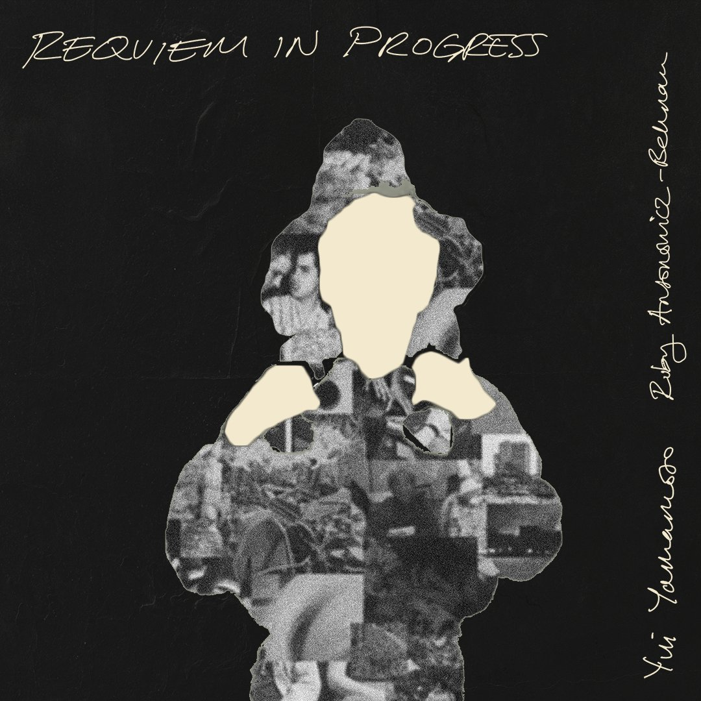
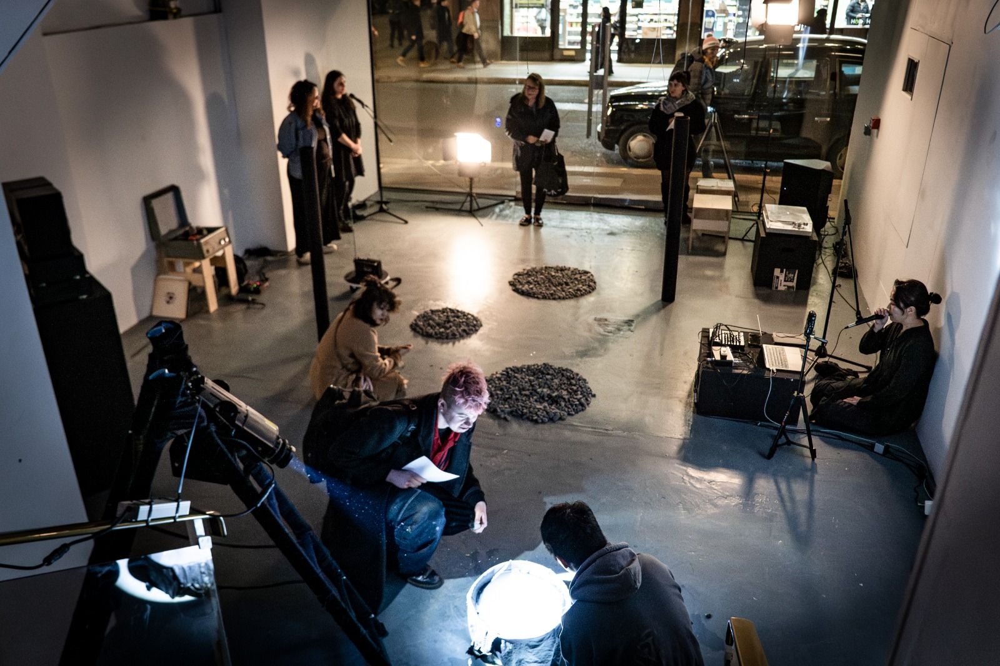
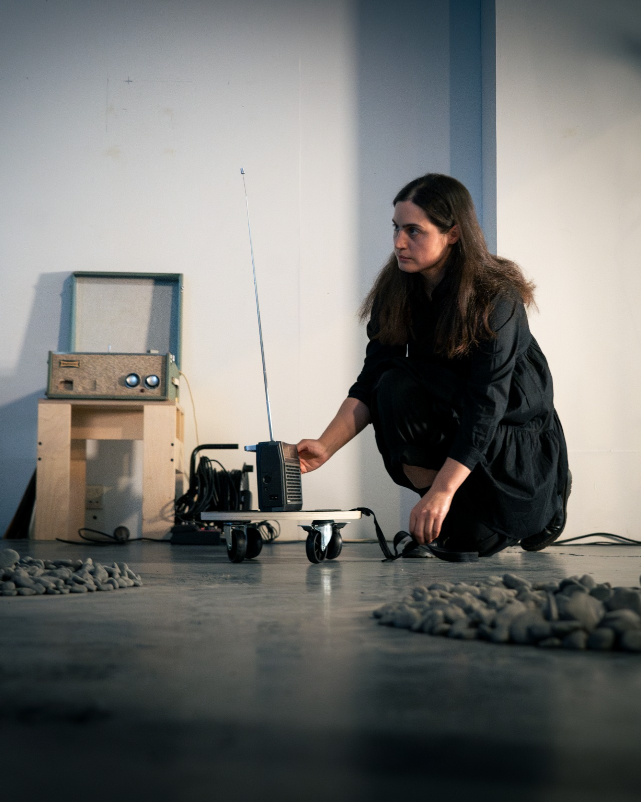
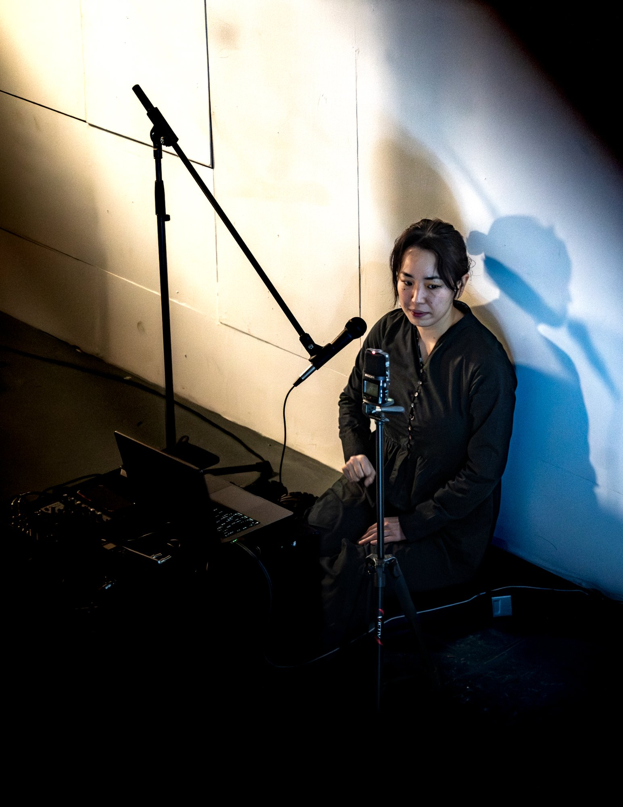
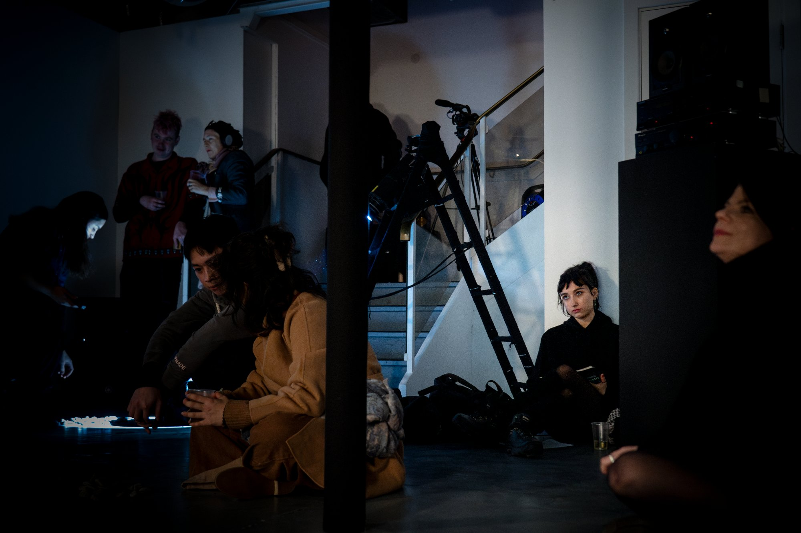
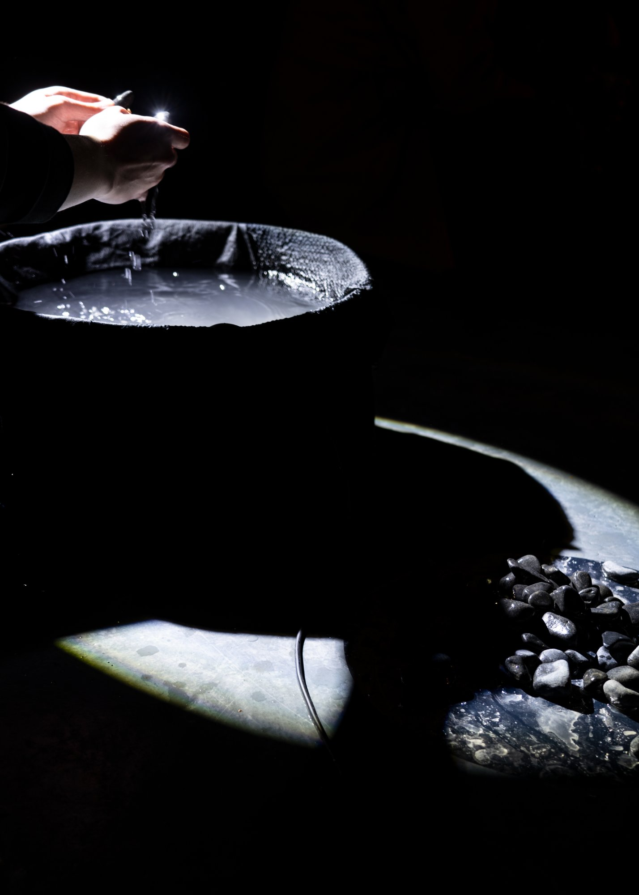
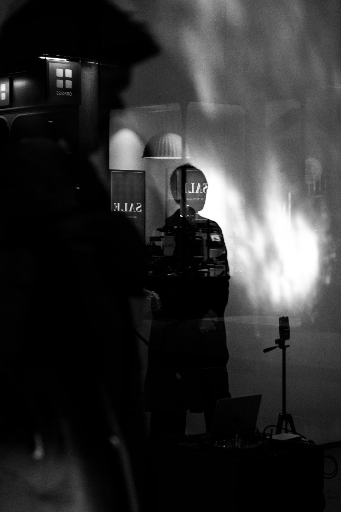
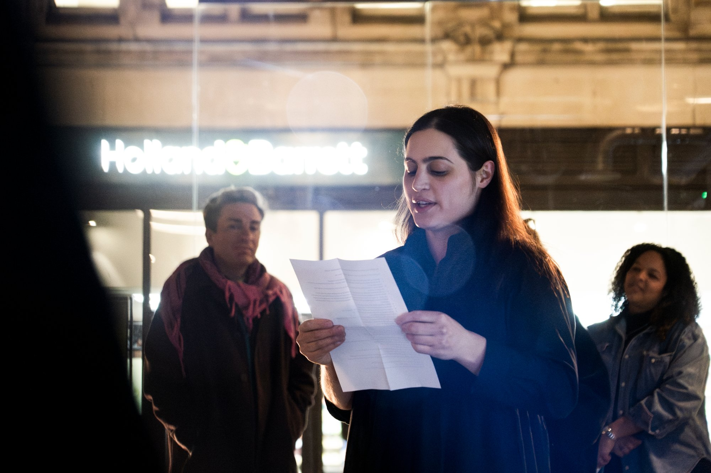
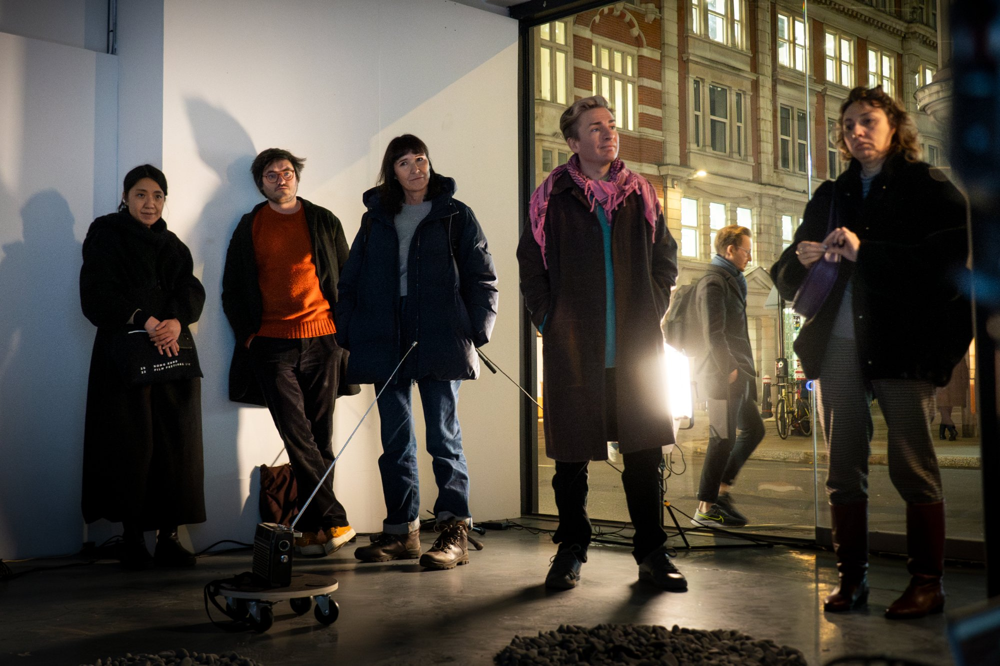
Our initial investigations were presented at the Embassy Gallery in Edinburgh and Chisenhale, London. Exploring physical, geographical, and emotional proximity to loss and remembrance, the performance incorporated snippets of vinyl recordings from the artist's late father's vast archive alongside sounds evoking global events. At Somers Gallery, we explored the intimate and private space of grief, incorporating our recorded conversation on the death of loved ones, and started testing the use of our live voice in the performance.
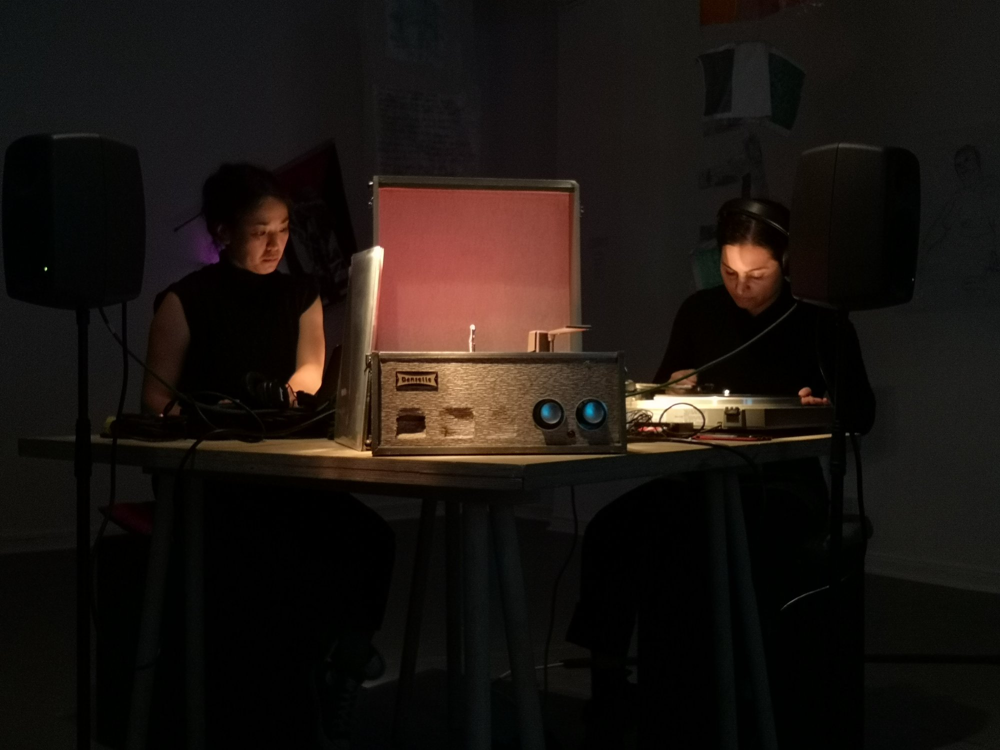
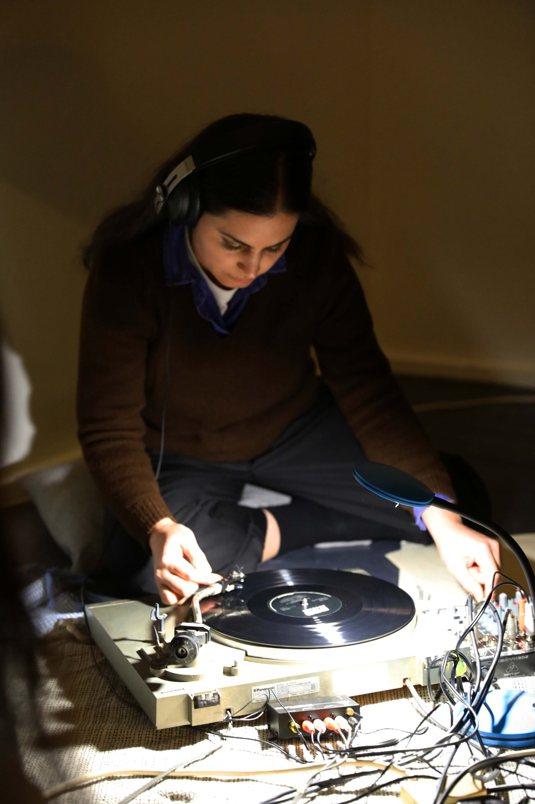
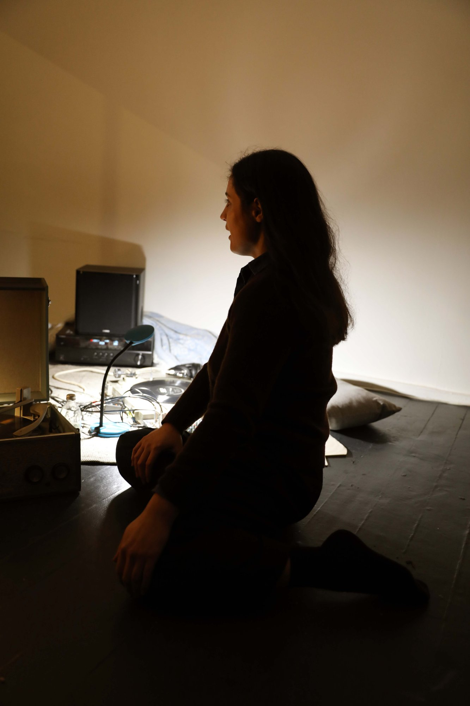
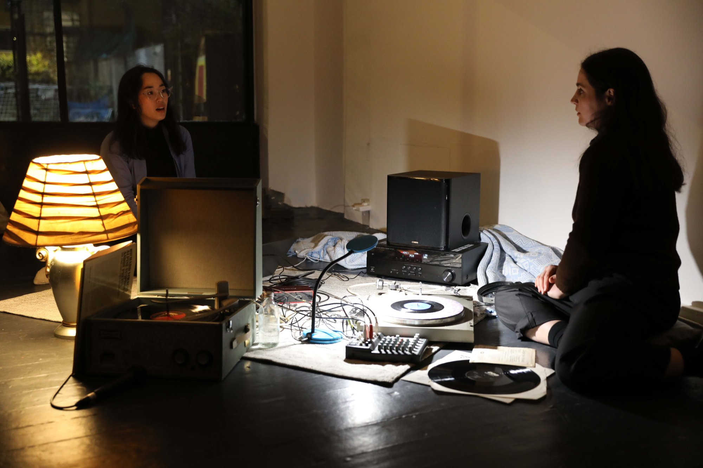